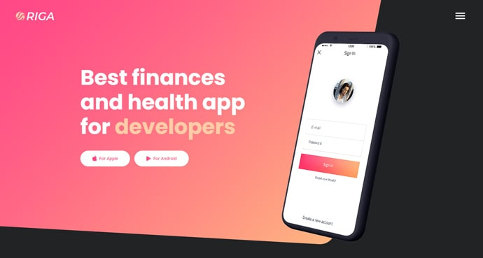
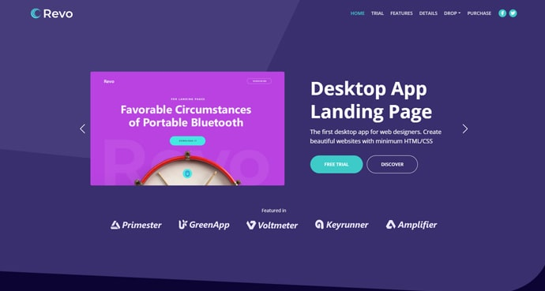

compañera
Comentarios de Profesores y Compañeros
"Jonathan es un estudiante muy comprometido"
"Excelente compañero de equipo. Cumplido."

Compañero de Ingeniería
Soy estudiante de Ingeniería en Sistemas Computacionales. Me apasiona la tecnología, la resolución de problemas lógicos y el desarrollo de software estructurado.
Creación de interfaces web interactivas utilizando HTML5, CSS3, JavaScript Vanilla y frameworks como Bootstrap 5.
Diseño de diagramas de flujo, autómatas finitos y algoritmos computacionales para la optimización de procesos.
Estudio de bases de datos relacionales (MySQL) y arquitecturas de servidores orientadas a entornos web (LAMP/MEAN).
Conocimientos en arquitectura de computadoras, sensores y sistemas embebidos (Arduino).
A lo largo de mi formación académica, he desarrollado competencias técnicas que me permiten proyectarme en las siguientes áreas de la industria tecnológica:
Construcción de aplicaciones web desde cero, enfocadas en un código limpio, estructurado y adaptable a cualquier dispositivo móvil o de escritorio.
Diseño, normalización y gestión de bases de datos para garantizar la integridad, seguridad y rápido acceso a la información de los sistemas.
Análisis de requerimientos de hardware y software, así como la comprensión del flujo de datos en arquitecturas cliente-servidor.
Soy una persona dedicada, con alta capacidad de aprendizaje y una fuerte atención al detalle. Considero que la comunicación y el trabajo en equipo son claves para el éxito de cualquier proyecto.
Actualmente domino tecnologías frontend y metodologías de diseño lógico, y me encuentro en proceso de dominar lenguajes de programación orientada a objetos e integraciones backend.
Una selección de mis trabajos académicos, prácticas técnicas y proyectos aspiracionales orientados a resolver problemas reales mediante código.
Calculadora Dinámica: Aplicación interactiva construida con JS Vanilla para convertir unidades de temperatura. Ver en GitHub
Dashboard Escolar: Sistema de gestión con login seguro, uso de LocalStorage y validaciones estrictas con Expresiones Regulares. Detalles
DataSport App: Plataforma (En planeación) para visualizar estadísticas, probabilidades y análisis de datos de ligas de fútbol mundial. Detalles
Punto de Venta: Software de gestión de inventarios y facturación diseñado con Java y base de datos relacional. (Proyecto Planeado)

Controlador IoT: Sistema de automatización de temperatura utilizando sensores, actuadores y una placa Arduino. (Proyecto Planeado)

Simulador Lógico: Diseño de transiciones de estados mediante herramientas visuales para el análisis de autómatas finitos. (Proyecto Académico)
"Jonathan es un estudiante muy comprometido"
"Excelente compañero de equipo. Cumplido."
Si te interesa mi perfil o quieres colaborar en algún proyecto, no dudes en enviarme un mensaje a través del siguiente formulario o visitando mi perfil de GitHub.
Copyright © 2026 Jonathan Rene Cruz Gutierrez. Estudiante de Ingeniería.